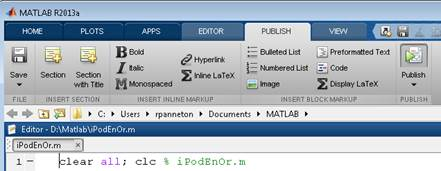
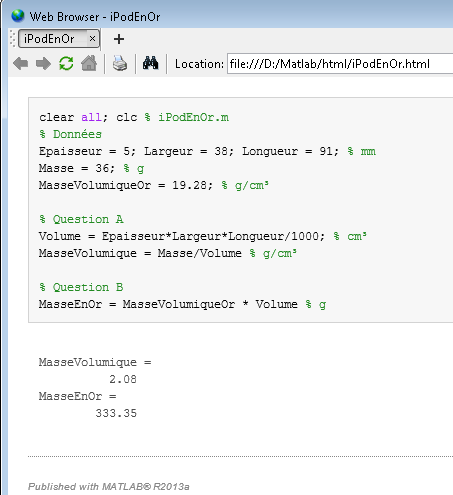

Code et exécution
dans un fichier html
Objectif
À l'aide d'un problème simple, illustrer comment présenter
un script et l'exécution dans le même fichier html.
Problème
Un iPod nano de 4e génération mesure
environ 5 mm d'épaisseur, 38 mm de largeur par 91 mm de
longueur. Il possède une masse de 36 g.
- Calculer la masse volumique (g/cm³) du
iPod.
- L'or possède une masse volumique de 19.28 g/cm³.
Calculer la masse d'un iPod en or pur.
Étape 1 –
Résoudre le problème en écrivant un script
- Résoudre le problème dans un script intitulé MonIpoEnOr.m.
- Ensuite copier la solution \110Ecrire\iPodEnOr.m
dans le répertoire de travail (habituellement D:\Matlab).
- Éditer le fichier et le comparer avec votre réponse.
Étape 2 – Générer
un fichier contenant script et exécution
- La procédure suivante permet de faire exécuter le
programme et de produire un fichier html contenant le script ainsi que son
exécution.
HTML
HyperText Markup Language ou html est un langage informatique permettant de
créer des documents pour un navigateur Internet. Des balises permettent la mise
en forme du texte.
Le traitement du programme iPodEnOr illustre la procédure de production d'un fichier html.
1 – Supposer que le fichier IpodEnOr.m soit
contenu dans le répertoire de travail D:\Matlab.

2 – Lancer Matlab et éditer le fichier.
3 – Choisir Publish to HTML dans le menu File de
l'éditeur.
Dans MATLAB 2007:

Dans MATLAB 2013: 
4 – Matlab crée un répertoire html dans le répertoire de travail et y
dépose le fichier IpodEnOr.html. Matlab ouvre ensuite le fureteur par défaut et
affiche le contenu.

Le fichier html est dans le répertoire html.

5 – Le fichier IpodEnOr peut être ouvert par d'autres fureteurs comme Firefox ou Microsoft Internet Explorer. Il contient le code du script suivi des résultats du programme.

Pour obtenir un travail de plus belle facture, l'éditeur de Matlab possède un jeu de balises html. C'est le sujet du prochain chapitre.